UI/UX 설계 기준
기능 간 관계와 이동 경로, 화면 이름과 문장, 사용자 행동에 따른 상태 변화와 오류 대응 방식을 하나의 가이드로 정리했어요.
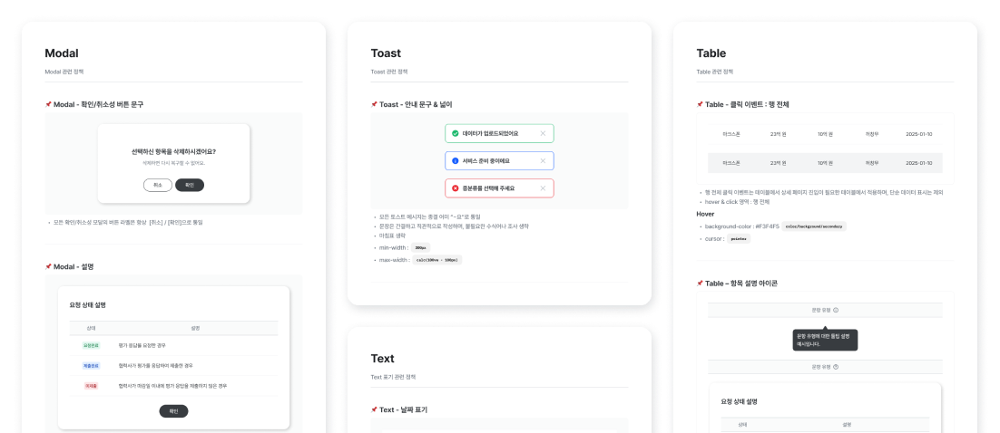
ESG Management · B2B SaaS
ESG 데이터를 목표와 보고서로 잇는 관리 플랫폼
Product Designer

01Context
기업의 ESG 데이터를 한곳에 모으고, 목표 관리와 보고서 작성·검토라는 실제 업무로 잇는 플랫폼이에요. 관리자와 사용자가 권한에 따라 서로 다른 정보를 다뤄요.
02Core Problem
ESG 데이터는 목표 관리와 공시, 보고서 작성으로 이어져야 해요. 관리자와 사용자는 권한에 따라 서로 다른 정보를 다뤄요.
인벤토리 지표가 쌓여도 관리할 목표와 달성 현황으로 이어지지 않으면 업무에 쓰기 어려워요.
보고서 작성과 항목별 검토 결과가 따로 읽히면 먼저 고칠 부분을 찾기 어려워요.
그래서, 이렇게 봤어요
ESG 데이터는 관리보다 실행이 중요하다고 봤어요. 지표는 실행할 수 있는 목표 단위로 다시 묶여야 했어요.
03Design Direction
지표를 더 많이 보여주기보다
실행할 수 있는 목표 단위로 묶었어요
검토 결과를 한 번에 보여주기보다
항목별로, 먼저 확인할 것부터 보이게 했어요
화면마다 다른 이름과 동작보다
같은 명칭·상태·인터랙션 기준을 먼저 정했어요
04Before & After
목표 관리와 AI 검토 결과, 두 화면의 정보 위계를 바꿨어요.
Before
After
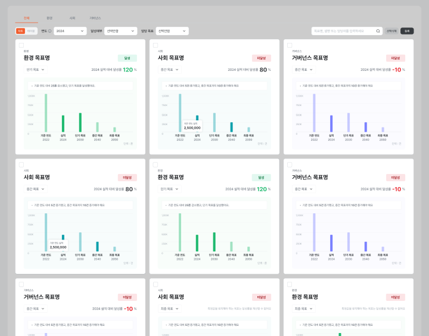
01
서로 다른 단계의 목표를 함께 다뤄야 해서, 진행 단계와 필요한 항목부터 구분되게 했어요. 달성 여부·담당자 필터로 원하는 목표를 빨리 찾아요.
Before
After
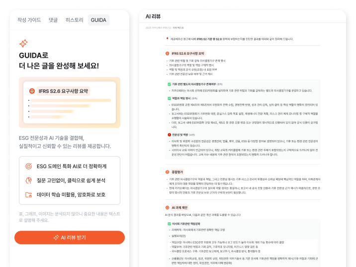
02제품 기능 · AI 보고서 검토 GUIDA
검토 내용을 한 덩어리로 보여주면 먼저 고칠 부분을 찾기 어려워요. 항목별로 작성하고 필요한 시점에 검토를 실행하게 했어요.
05Key Decisions
데이터 입력부터 공시, 분석, 활용까지 한 흐름으로 이어지도록 두 업무의 출발점을 같은 데이터에 두고, 이름과 상태의 기준은 개발까지 이어갔어요.
목표
보고서
기능 간 관계와 이동 경로, 화면 이름과 문장, 사용자 행동에 따른 상태 변화와 오류 대응 방식을 하나의 가이드로 정리했어요.

컬러·타이포그래피 기준과 재사용 컴포넌트를 묶어, 화면마다 달랐던 UI를 같은 규칙으로 맞췄어요.
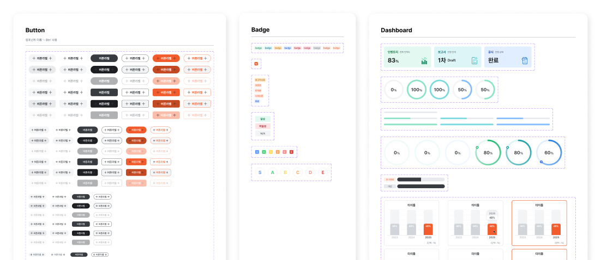
UI 요소에 주석을 연결해 기능·동작·예외 상태를 화면 안에서 확인하게 하고, 화면과 기능 흐름을 디스크립션으로 적어 같은 기준으로 구현하게 했어요.
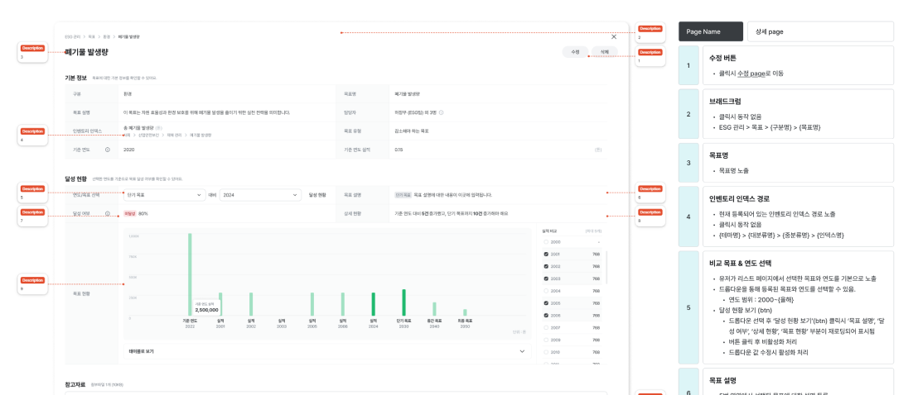
06Key Screens
주요 화면을 사용 흐름에 따라 살펴보세요.
ESG 업무의 전체 상태부터 파악해요.
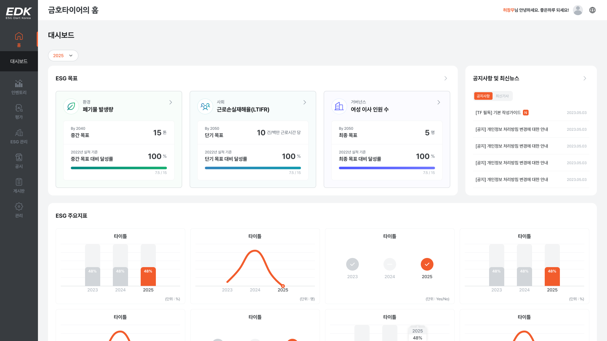
흩어진 데이터를 한곳에서 읽고, 목표나 보고서 업무로 이동할 출발점을 마련했어요.
진행 단계와 담당자를 기준으로 목표를 찾아요.
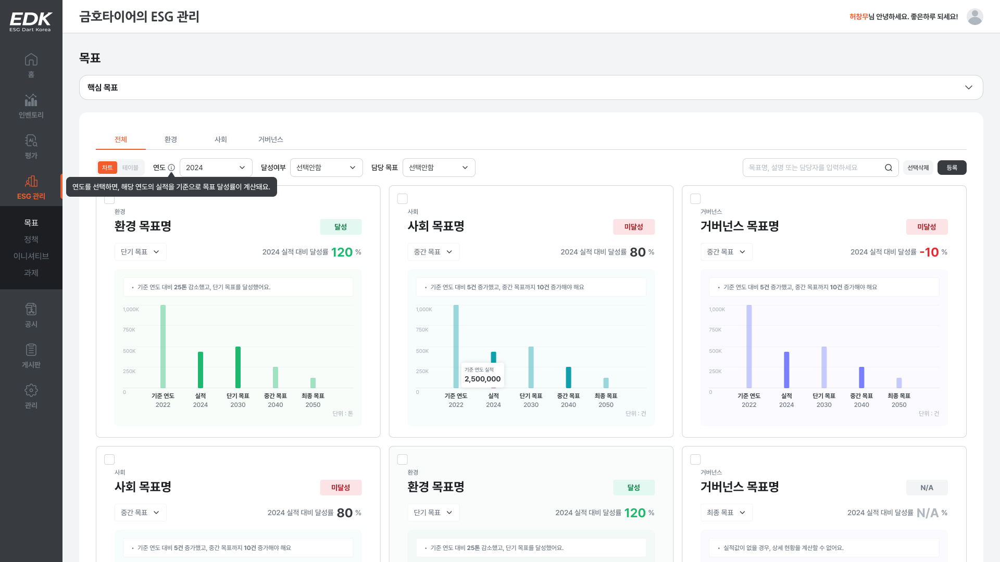
단기·중간·최종 목표를 구분하고 필터를 함께 두어, 먼저 살펴볼 목표를 좁히게 했어요.
선택한 목표의 세부 내용을 확인해요.
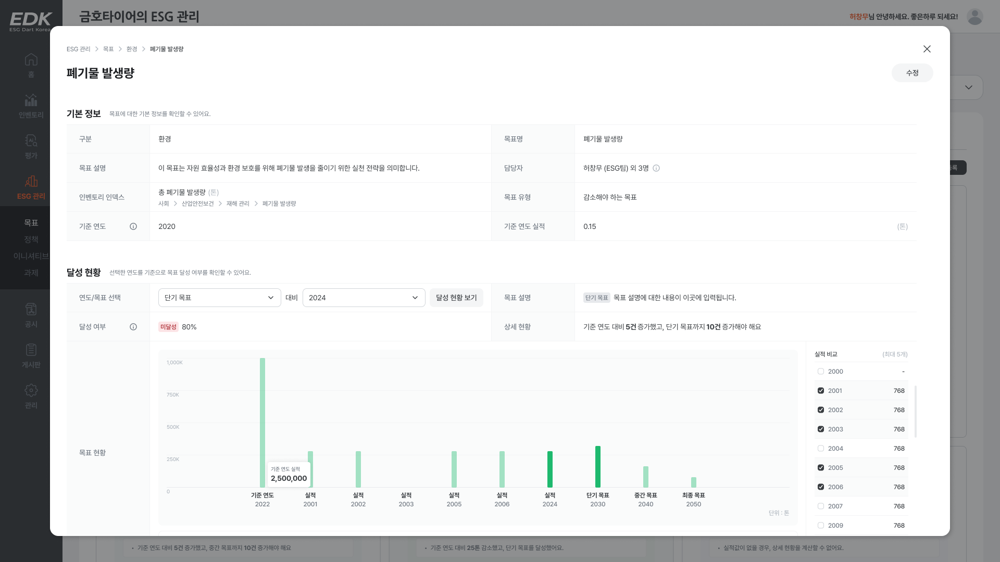
목록에서 고른 목표를 중심으로 상세 정보를 이어, 전체 현황과 개별 목표 사이의 맥락을 유지했어요.
같은 데이터에서 보고서 업무로 이어져요.
보고서를 항목별로 나눠 작성하게 해, 필요한 내용을 확인하고 검토할 단위를 분명히 했어요.
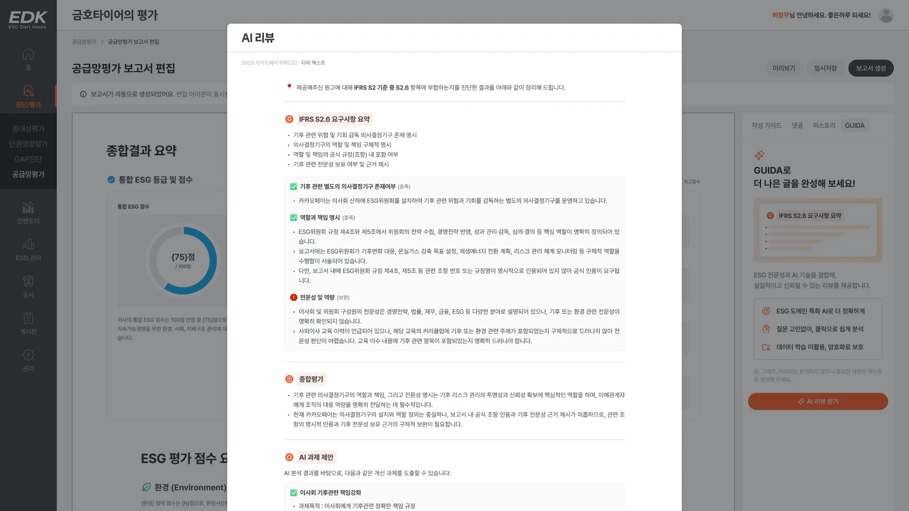
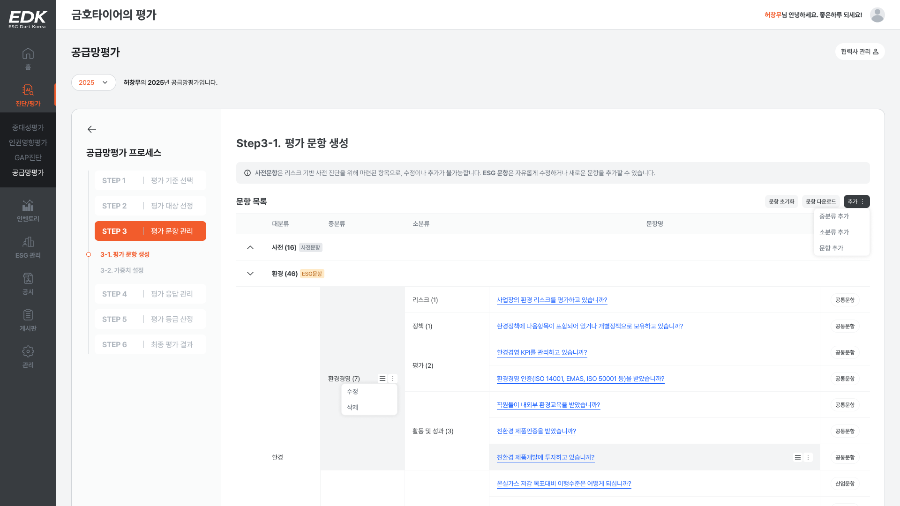
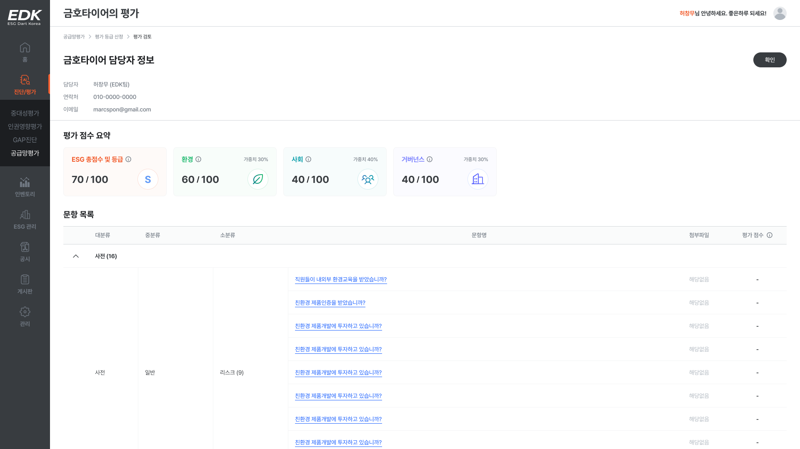
07AI Workflow예시
이 프로젝트의 AI 활용 기록을 채울 자리예요. ‘예시’로 표시한 칸을 실제로 AI에 맡긴 일로 바꿔 주세요.
01요구사항 정리
AI가 도운 일예시긴 기획 내용을 기능·사용자·상태·예외 조건으로 나눈 초안을 만들었어요.
직접 판단한 일ESG 지표를 실행할 수 있는 목표 단위로 묶기로 정했어요.
02시안 제작
AI가 도운 일예시그래프처럼 반복되는 시안을 빠르게 만드는 방식을 만들었어요.
직접 판단한 일예시남길 지표와 표현 방식을 직접 골랐어요.
03검수
AI가 도운 일예시상태·권한·예외 상황의 확인 항목 초안을 정리했어요.
직접 판단한 일검토 결과에서 먼저 확인할 내용의 우선순위를 정했어요.
08Outcome
흩어진 ESG 데이터를 업무 단위로 정리한 결과예요.
인벤토리 지표를 단기·중간·최종 목표와 달성 현황으로 관리해요.
항목별 작성과 우선순위로 AI 검토 결과를 읽어요.
명칭·상태·예외 기준을 컴포넌트와 주석, 디스크립션으로 공유했어요.
데이터를 모으는 구조와 그 데이터를 쓰는 업무 흐름은 함께 설계해야 해요. 데이터 화면을 만들 때 ‘이 데이터가 어떤 업무로 이어지는가’를 먼저 정하는 기준이 생겼어요.